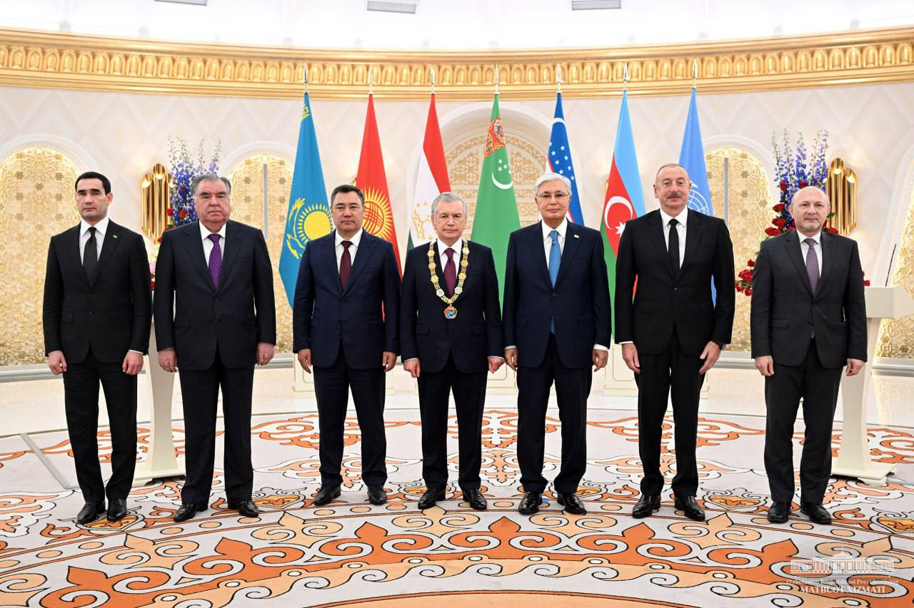

Markaziy Osiyo — bu Osiyo qitʼasidagi sub-mintaqa boʻlib, janubi-gʻarbda Kaspiy dengizi va shimoli-gʻarbda Sharqiy Yevropadan sharqda Xitoy va Moʻgʻulistonga qadar, janubda Afgʻoniston va Erondan shimolda Rossiyaga qadar choʻzilgan.[1] Mintaqa oʻz ichiga sobiq Sovet davlatlari boʻlmish Qozog'iston, Qirgʻiziston, Tojikiston, Turkmaniston va Oʻzbekistonni oladi. Ushbu besh respublika nomidagi oʻxshashliklar tufayli mintaqadan tashqarida (asosan Gʻarbda) mintaqa davlatlari umumiy tarzda '-stanʼ davlatlari deb ham yuritiladi. Markaziy Osiyoda ònlab qadimiy va rivojlangan shaharlar mavjud boʻlib ular: Samarqand, Buxoro, Xiva, Toshkent, Hoʻjand, Marv, Ashxobod, Osh, Bishkek, Shimkent, Olma-Ota, Turkiston, Margʻilon, Shahrisabz, Qoʻqon va Rishtondir. Islomdan oldingi davrda va Islom dini mintaqaga kirib kelishi davrida (tahminan milodiy 1000-yil yoki undan oldin) Markaziy Osiyoda asosan eroniy tilda soʻzlashuvchi va madaniyatga ega boʻlgan xalqlar istiqomat qilgan[2][3]. Hududda baqtriyaliklar, soʻgʻdlar, xorazmliklar va yarim-koʻchmanchi skiflar hamda dahlar yashagan. Markaziy Osiyo oʻzbeklar, qozoqlar, tatarlar, turkmanlar, qirgʻizlar va uygʻurlar uchun ham Vatan hisoblanadi. Rossiyalik etnolog Abashinning soʻzlariga koʻra, Rossiya imperiyasi kelishidan oldin Oʻrta Osiyoda „Etnik guruhlar“ boʻlmagan. Faqat Rossiyaning kelishi bilan Oʻrta Osiyoda xalqlar paydo boʻldi.[4] Tarixan Markaziy Osiyo Buyuk Ipak yoʻli bilan aloqador boʻlib, Yevropa va Uzoq Sharq orasida odamlar, tovarlar va gʻoyalar almashinuvi uchun chorraha vazifasini bajargan. Markaziy Osiyoning koʻpchilik davlatlari bugungi kunda ham dunyo iqtisodining muhim tarkibiy qismi hisoblanadi.[5][6] XIX asr oxirlaridan XX asr oxirigacha Markaziy Osiyo ruslar tomonidan mustamlakaga aylantirilgan. Hudud dastlab Rossiya imperiyasi, keyinchalik Sovet Ittifoqi tarkibiga kiritilgan boʻlib, bu ruslar va boshqa slavyan xalqlarining hududga koʻchib kelishiga sabab boʻldi. Bugungi kunda Markaziy Osiyoda kelib chiqishi Yevropalik boʻlgan koʻp sonli xalqlar mavjud boʻlib, ulardan asosiy qismi Qozogʻistonda istiqomat qiladi. Hududda 7 million ruslar, 500,000 ukrainlar va tahminan 170,000 nemislar yashaydi. Stalin davridagi majburiy koʻchirishlari sababli hudduda bugungi kunda 300,000 dan ortiq koreyslar ham istiqomat qiladi.[7] Markaziy Osiyoda tahminan 80.2 million kishi istiqomat qilib, ular beshta davlatga taqsimlangan: Qozogʻiston (20 million), Qirgʻiziston (7 million), Tojikiston (10 million), Turkmaniston (6 million) va Oʻzbekiston (37.2 million).[8]
Tarixiy mintaqalar
Markaziy Osiyo shimolda Sibir oʻrmonlari bilan chegaralangan. Markaziy Osiyoning shimoliy qismi (Qozogʻiston) Yevrosiyo dashtining oʻrta qismini tashkil qiladi. Gʻarbda Qozoq dashti rus-ukrain dashtlari bilan tutashsa, sharqda Jungʻor va Mogʻul dashtlari bilan tutashib ketadi. Janubga qarab yer tobora quruqlashib, koʻchmanchi aholi ham siyraklashib boradi. Janubdagi sugʻorma dehqonchilik imkoni bor hududlarda aholi zichlashib, shaharlar shakllangan. Asosiy sugʻorma dehqonchilik hududlari Sharqdagi togʻ yonbagʻirlarida, Oks va Yaksart daryolari vodiylarida va Fors bilan chegaradagi Kopetdogʻning shimoliy yonbagʻirlarida joylashgan. Kopetdogʻdan sharqda Marv vohasi, shuningdek Hirot va Balx kabi muhim hududlar joylashgan. Tyan-Shan togʻlarining ikki tumshugʻi sharqdagi togʻlar orasida uchta oʻziga xos 'koʻrfazlarni' hosil qiladi. Ularning ichida eng yirigi shimolda, sharqiy Qozogʻistonda boʻlib, bu hudud tarixan Yettisuv, yoki Semirechye (ruscha: Semiréche) deb nomlangan va bu hududda Balxash koʻli joylashgan. Oʻrtaliqda kichik, lekin zich aholiga ega boʻlgan Fargʻona vodiysi joylashgan. Janubda esa keyinchalik Toxariston deb atalgan Baqtriya joylashgan boʻlib, bu hudud janubda Hindukush togʻlari bilan chegaralangan. Sirdaryo (Yaksart) Fargʻona vodiysida boshlansa, Amudaryo (Oks) Baqtriyada boshlanadi. Bu daryolarning har ikkisi ham shimoli-gʻarbga, Orol dengiziga qarab oqadi. Amudaryo Orol dengiziga quyiladigan joyida yirik deltani hosil qiladi va bu hudud Xorazm, keyinchalik Xiva xonligi deb atalgan. Amudaryo shimolida nisbatan notanish, lekin Samarqand va Buxoro kabi savdo-sanoat markazlarini suv bilan taʼminlovchi Zarafshon daryosi joylashgan. Mintaqadagi yana bir yirik savdo markazi Toshkent boʻlib, bu shahar Fargʻona vodiysiga kirish nuqtasidan shimoli-gʻarbda joylashgan. Amudaryodan shimoldagi hududlar Movarounnahr, shuningdek, ayniqsa ipak yoʻli savdosida hukmron mavqeda boʻlgan soʻgʻd savdogarlariga nisbatan ishlatilganda, Soʻgʻd deb atalgan. Sharqda, Jung'ariya va Tarim havzasi tahminan 1759-yilda Xitoyning Shinjon viloyatiga birlashtiriladi. Odatda Xitoydan otlangan karvonlar Tarim havzasining shimoliy yoki janubiy qismlaridan oʻtib, Qashqarda birlashishgan va u yerdan shimoli-gʻarbdagi Fargʻona tomonga, yoki janubi-gʻarbdagi Baqtriya tomonga harakatlanishgan. Buyuk ipak yoʻlining kichikroq yana bir shaxobchasi Tyan-Shanning shimolidan boshlanib, Jungʻoriya va Yettisuvdan oʻtgan va Toshkent yaqinida janubga qayrilgan. Koʻchmanchi qabilalar odatda Moʻgʻulistondan boshlanib, Jungʻoriya orqali oʻtishgan va Toshkent yaqinida janubga qayrilib, oʻtroq aholini istilo qilishgan, yoki gʻarbga, Yevropa tomonga harakatni davom ettirishgan. Qizilqum choʻli Amudaryo va Sirdaryo oraligʻida joylashgan va Qoraqum Amudaryo hamda Turkmanistondagi Kopetdogʻ orasida joylashgan. Xuroson tahminan shimoli-sharqiy Eronni va Afgʻoniston shimoliy hududlarini anglatgan. Margʻiyona esa Marv shahri atroflarini anglatgan. Ustyurt platosi esa Orol Orol va Kaspiy dengizlari oraligʻidagi hududdir. Janubi-gʻarbda, Kopetdogʻdan narida Fors davlati joylashgan. Aynan shu hudud orqali Fors davlati va Arab xalifaligi Markaziy Osiyoga suqilib kirgan va Rossiya Imperiyasi bosqiniga qadar mahalliy aholining madaniyatiga oʻz taʼsirini oʻtkazgan. Janubi-sharqda Hindiston tomon yoʻl mavjud. Qadimda Buddizm shu yoʻl orqali shimolga tarqalgan va tarixda juda koʻp marotaba Markaziy Osiyolik jangovar qabilalar va podsholar shu yoʻldan oʻtib, Shimoliy Hindistonni istilo qilishgan va u yerda oʻz hokimiyatlarini oʻrnatishgan. Koʻchmanchi bosqinchilarning koʻpchiligi shimoli-sharqdan kirib kelgan. 1800-yillardan keyin Rossiya imperiyasi va keyinchalik Sovet Ittifoqi shaklida hududga shimoli-gʻarbdan G'arb sivilizatsiyasi kirib keldi.
Tarixiy mintaqalar nomlari
Baqtriya Dahiston Xuroson Xorazm Margʻiyona Parfiya Soʻgʻdiyona Toxariston Movarounnahr Turon Turkiston Tarixi Garchi Orientalizm davrida Markaziy Osiyoning jahon tarixidagi hissasi kamaytirib koʻrsatilgan boʻlsada, bugungi kun tarixnavisligi Markaziy Osiyo tarixining ham 'markaziy' ahamiyatini tan olmoqda.[9] Markaziy Osiyo tarixi hududning iqlimi va geografiyasi bilan belgilanadi. Mintaqa iqlimining quruqligi ziroatchilikni qiyinlashtirgan boʻlsa, dengizlardan uzoqda joylashish mintaqaning savdo aloqalarini qiyinlashtirdi. Shu sababdan ham hududda yirik shaharlar soni ham boʻlib, hudud ming yillar davomida dasht koʻchmanchi qabilalari hukmi ostida boʻlgan. Markaziy Osiyodagi koʻchmanchi qabilalar va oʻtroq xalqlar orasidagi munosabatlar uzoq vaqt davomida dushmanona tusga ega boʻlgan. Koʻchmanchi turmush tarzi harbiylar uchun oʻta mos boʻlib, ichki uyushqoqlikdan mosuvo boʻlganini hisobga olmasa, koʻchmanchi dashtliklar uzoq davr mobaynida dunyodagi eng qudratli harbiy kuchni tashkil qilishgan. Ular orasidagi ichki uyushqoqlikka baʼzan erishilgan boʻlsa, bu ham Markaziy Osiyodan oʻtuvchi Buyuk Ipak yoʻli tufayli edi. Tarix davomida baʼzan buyuk yetakchilar, yoki tarixiy shart-sharoit bir necha qabilalarning yagona kuchga birlashishiga sabab boʻlib, keyin ular deyarli toʻxtatib boʻlmas kuchga aylanar edi. Bularga misol qilib Yevropaga bosqinchilik yurishlarini amalga oshirgan Hunlarni, Qadimgi Xitoydagi Besh varvarlar qoʻzgʻolonini, ayniqsa Yevrosiyoning katta qismini istilo qilgan moʻgʻullarni keltirish mumkin. Islomgacha va Islomning dastlabki davrlarida Markaziy Osiyoda Eroniy tillarda soʻzlashuvchi xalqlar istiqomat qilgan.[2][10] Eng qadimgi Eroniy xalqlardan soʻgʻdlar va xorazmliklar oʻtroq hayot kechirgan boʻlsa, skiflar va keyinchalik alanlar kabi eroniy qabilalar koʻchmanchi, yoki yarim-koʻchmanchi hayot kechirgan. Turkiy xalqlarning asosiy koʻchib kelish toʻlqini VI-XI asrlar oraligʻida sodir boʻlib, bu davrda turkiy xalqlar Markaziy Osiyoning deyarli barcha qismiga tarqalishgan. Yevrosiyo dashtlarida asta-sekinlik bilan hind-yevropa tillarida soʻzlashuvchi eroniy xalqlar oʻrniga, kelib chiqishi Sharqiy Osiyo va Moʻgʻulistonga borib taqaluvchi guruhlar hukmron mavqega ega boʻla boshladi.[11] VIII asrga kelib mintaqaga Arab xalifaligi va Islom kirib keldi, lekin aholi demografik holatiga sezilarli taʼsir koʻrsatmadi. XIII asrda hududning moʻgʻul qabilalari tomonidan bosib olinishi hududda katta demografik oʻzgarishlarga sabab boʻldi, lekin xalqlarning madaniy yoki lingvistik holatiga taʼsir koʻrsatmadi.[12] Markaziy Osiyo orqali oʻtgan istilo yoʻllari Qachonlardir hind-yevropa tillarida soʻzlashuvchi eroniy va boshqa xalqlar istiqomat qilgan Markaziy Osiyoga Janubiy Sibir va Moʻgʻulistondan koʻplab bosqinchilik yurishlari uyushtirilgan va bu hududga oʻz taʼsirini oʻtkazmasdan qolmagan. Genetik maʼlumotlar shuni koʻrsatadiki, bugungi kunda Markaziy Osiyoda istiqomat qiluvchi turli-xil turkiy tillarda soʻzlashuvchi xalqlar vakillari geni ~22% va ~70% hollarda Sharqiy Osiyoga borib taqalsa (boshqa shimoli-sharqiy Osiyoliklar va sibirliklarga ham xos boʻlgan „Baykal ovchi-termachi geni“), hududdagi eroniy tillarda soʻzlashuvchi xalqlar, ayniqsa tojiklar orasida hududda Temir davrida istiqomat qilgan hind-yevropaliklar bilan genetik aloqadorlik borligi aniqlangan. Baʼzi turkiy etnik guruhlar, ayniqsa qozoqlarda undanda yuqori foizda Sharqiy Osiyo xalqlari bilan qardoshlik aniqlangan.Yirik shaharlari
kmt Markaziy Osiyoning eng yirik shaharlari Oʻrni Davlat Aholi Olmaota Olmaota 1 Toshkent Oʻzbekiston 3,040,800 2 Olmaota Qozogʻiston 2,156,749 3 Ostona Qozogʻiston 1,350,228 4 Shimkent Qozogʻiston 1,189,209 5 Bishkek Qirgʻiziston 1,074,075 6 Ashxobod Turkmaniston 727,000 7 Dushanbe Tojikiston 679,400 8 Namangan Oʻzbekiston 1.000.000 9 Aktobe Qozogʻiston 560,820 10 Samarqand Oʻzbekiston 1.542.900 Shahar Gerbi Davlat Aholi Tasvir Maʼlumotlar Ashxobod Turkmaniston bayrogʻi Turkmaniston 1,030,063 (2022) Turkmaniston poytaxti va eng yirik shahri. 1818-yilda ruslar asos solgan qishloqdan oʻsib chiqqan shahar ancha yosh hisoblanadi. Shahar yaqinida Parfiya davlatining qadimgi poytaxti boʻlmish Niso xarobalari joylashgan. Bishkek Qirgʻiziston bayrogʻi Qirgʻiziston 1,074,075 (2021) Qirgʻiziston poytaxti va eng yirik shahri. Bishkek shuningdek Qirgʻizistonning Chuy viloyati maʼmuriy markazidir. Ushbu viloyat shaharni oʻrab turadi, lekin shahar ushbu viloyat tarkibida emas, balki viloyat-maqomidagi birlikdir. Buxoro Oʻzbekiston bayrogʻi Oʻzbekiston 280,187 (2020) Oʻzbekistonning Buxoro viloyati markazi va mamlakatdagi beshinchi eng yirik shahar. Buxoro mil. av. VI asrda shakllangan Fors tamadduni dunyoga kelishi bilan uning markaziy nuqtalaridan biri hisoblangan. milodiy XII asrga kelib esa turkiy tilda soʻzlashuvchilar koʻchib kelishni boshlagan. Shahar meʼmorchiligi va arxeologik yodgorliklari Markaziy Osiyo tarixi va sanʼatining tamal toshlaridan biridir. Dushanbe Tojikiston bayrogʻi Tojikiston 1,201,800 (2022) Tojikiston poytaxti va eng yirik shahri. Ayonki, shahar nomi hafta kunini anglatadi va shaharning avvaliga xalq orasida mashhur Dushanba kunlik bozor oʻtkaziladigan qishloqdan oʻsib chiqqanini koʻrsatadi. Ostona Qozogʻiston bayrogʻi Qozogʻiston 1,350,228 (2022) Qozogʻiston poytaxti va ikkinchi eng yirik shahri. 1994-yilda shahar yangi mustaqillikka erishgan respublikaning boʻlgʻusi poytaxti boʻlishi belgilandi va poytaxt 1997-yilda rasman Olmaotadan Ostonaga koʻchirildi. 2019-yilda shahar oʻz vazifasidan ketgan birinchi prezident Nursulton Nazarboyev sharafiga „Nur-Sulton“ deb oʻzgartirildi, lekin 2022-yilda yana qayta Ostonaga oʻzgartirildi. Olmaota Qozogʻiston bayrogʻi Qozogʻiston 2,211,198 (2023) Mamlakatning eng yirik shahri. Shahar 1929-1997-yillar oraligʻida Qozogʻistonning (va undan oldin Qozoq SSRning) poytaxti boʻlgan. Poytaxt maqomini yoʻqotganiga qaramasdan, shahar Qozogʻistondagi yirik savdo-sanoat markazlaridan biri boʻlib qolmoqda. Olmaota Qozogʻistonning va Markaziy Osiyo mintaqasining tan olingan moliyaviy markazlaridan biridir. Oʻsh Qirgʻiziston bayrogʻi Qirgʻiziston 361,273 (2023) Qirgʻizistondagi ikkinchi eng yirik shahar. Shuningdek, Oʻsh shaharni oʻrab turuvchi Oʻsh viloyatining maʼmuriy markazi hamdir. Ushbu viloyat shaharni oʻrab turadi, lekin shahar ushbu viloyat tarkibida emas, balki viloyat-maqomidagi birlikdir. Qoʻqon Oʻzbekiston bayrogʻi Oʻzbekiston 259,700 (2022) Oʻzbekiston sharqidagi Fargʻona viloyatida joylashgan shahar. Fargʻona vodiysining janubi-gʻarbida joylashgan. Qoʻqon Toshkentdan 228 km janubi-sharqda, Andijondan 115 km gʻarbda va Fargʻonadan 88 km gʻarbda joylashgan. Shahar baʼzan „Shamollar shahri“ deb ataladi. XVIII-XIX asrlarda mavjud boʻlgan Qoʻqon xonligi poytaxti. Samarqand Oʻzbekiston bayrogʻi Oʻzbekiston 513,572 (2019) Oʻzbekistondagi eng yirik ikkinchi shahar va Samarqand viloyati markazi. Shahar ayniqsa Gʻarb va Xitoy orasidan oʻtgan Buyuk Ipak yoʻlidagi markaziy maqomi, shuningdek Markaziy Osiyo tamadduni beshiklaridan ekani bilan tanilgan. Mirzo Ulugʻbek (1394-1449) aynan shu shaharda ulkan rasadxona barpo etadi.[20] Toshkent Oʻzbekiston bayrogʻi Oʻzbekiston 3,000,000 (2023) Oʻzbekiston poytaxti. Oʻzbekiston va Markaziy Osiyodagi eng yirik shahar. Islomgacha va Islomning dastlabki davrlarida shahar Choch nomi bilan tanilgan. Toshkent Chirchiq daryosi boʻyidagi voha sifatida paydo boʻlgan boʻlib, qadimgi davrlarda Qangʻ davlatining yozgi poytaxti vazifasini bajargan.[21] Manbalar „Central Asia“. Britannica. Qaraldi: 2023-yil 16-dekabr. Bosworth, C. E. (1990). „CENTRAL ASIA iv. In the Islamic Period up to the Mongols“. In Yarshater, Ehsan (ed.). Encyclopædia Iranica, Volume V/2: C̆ehel Sotūn, Isfahan–Central Asia XIII. London and New York: Routledge & Kegan Paul. pp. 169–172. ISBN 978-0-939214-69-3. In early Islamic times Persians tended to identify all the lands to the northeast of Khorasan and lying beyond the Oxus with the region of Turan, which in the Šāh-nāma of Ferdowsī is regarded as the land allotted to Ferēdūnʼs son Tūr. The denizens of Tūrān were held to include the Turks, in the first four centuries of Islam essentially those nomadizing beyond the Jaxartes, and behind them the Chinese (see Kowalski; Minorsky, „Tūrān“). Tūrān thus became both an ethnic and a geographical term, but always containing ambiguities and contradictions, arising from the fact that all through Islamic times the lands immediately beyond the Oxus and along its lower reaches were the homes not of Turks but of Iranian peoples, such as the Sogdians and Khwarezmians. C.E. Bosworth „The Appearance of the Arabs in Central Asia under the Umayyads and the establishment of Islam“, . History of Civilizations of Central Asia, Vol. IV: The Age of Achievement: AD 750 to the End of the Fifteenth Century, Part One: The Historical, Social and Economic Setting, Multiple History Series M. S. Asimov, C. E. Bosworth: . Paris: Motilal Banarsidass Publ./UNESCO Publishing, 1999 — 23-bet. „Central Asia in the early seventh century, was ethnically, still largely an Iranian land whose people used various Middle Iranian languages.“ Abashin, S. N. Vozvraщenie sartov? Metodologiya i ideologiya v postsovetskix nauchnix diskussiyax // Antropologicheskiy forum 10 (2009), s.252. Phillips, Andrew; James, Paul (2013). „National Identity between Tradition and Reflexive Modernisation: The Contradictions of Central Asia"“. National Identities. № 3 (1). 23–35-bet. doi:10.1080/14608940020028475. ISSN 1460-8944. „In Central Asia the collision of modernity and tradition led all but the most deracinated of the intellectuals-clerics to seek salvation in reconstituted variants of traditional identities rather than succumb to the modern European idea of nationalism. The inability of the elites to form a united front, as demonstrated in the numerous declarations of autonomy by different authorities during the Russian civil war, paved the way, in the early 1920s for the Soviet re-conquest of the Central Asia in the early 1920s“ Frankopan, Peter. The Silk Roads: A New History of the World, First Vintage Books ed., New York: Vintage Books — xv–xvi-bet. ISBN 978-1-101-94633-6.. „Central Asia’s Koreans in Korea: There and (Mostly) Back Again“ (28 August 2019). "Demograficheskaya situatsiya" (PDF). Statistika qoʻmitasi. Qaraldi: 19-may, 2019-yil. Okur, Mehmet Akif (2014). „Classical Texts of the Geopolitics and the "Heart of Eurasia“. Journal of Turkish World Studies. № XIV (2). 73–104-bet. C.E. Bosworth „The Appearance of the Arabs in Central Asia under the Umayyads and the establishment of Islam“, . History of Civilisations of Central Asia, Vol. IV: The Age of Achievement: AD 750 to the End of the Fifteenth Century, Part One: The Historical, Social and Economic Setting, Multiple History Series M. S. Asimov; C. E. Bosworth: . Paris: UNESCO Publishing, 1998 — 23-bet. „Central Asia in the early seventh century, was ethnically, still largely an Iranian land whose people used various Middle Iranian languages.“ Damgaard, Peter de Barros; Marchi, Nina; Rasmussen, Simon; Peyrot, Michaël; Renaud, Gabriel; Korneliussen, Thorfinn; Moreno-Mayar, J. Víctor; Pedersen, Mikkel Winther; Goldberg, Amy; Usmanova, Emma; Baimukhanov, Nurbol; Loman, Valeriy; Hedeager, Lotte; Pedersen, Anders Gorm; Nielsen, Kasper (May 2018). „137 ancient human genomes from across the Eurasian steppes“. Nature. № 557 (7705). 369–374-bet. Bibcode:2018Natur.557..369D. doi:10.1038/s41586-018-0094-2. ISSN 1476-4687. PMID 29743675. Zhabagin, Maxat; Balanovska, Elena; Sabitov, Zhaxylyk; Kuznetsova, Marina; Agdzhoyan, Anastasiya; Balaganskaya, Olga; Chukhryaeva, Marina; Markina, Nadezhda; Romanov, Alexey; Skhalyakho, Roza; Zaporozhchenko, Valery; Saroyants, Liudmila; Dalimova, Dilbar; Davletchurin, Damir; Turdikulova, Shahlo (2017). „The Connection of the Genetic, Cultural and Geographic Landscapes of Transoxiana“. Scientific Reports. № 7 (1). 3085-bet. Bibcode:2017NatSR...7.3085Z. doi:10.1038/s41598-017-03176-z. ISSN 2045-2322. PMC 5465200. PMID 28596519. „Численность городского и сельского населения по регионам“. The State Committee of the Republic of Uzbekistan on Statistics. 2020-yil 7-noyabrda asl nusxadan arxivlangan. Qaraldi: 2018-yil 25-yanvar. „Административно-территориальное деление Наманганской области“. Портал открытых данных Республики Узбекистан. 2020-yil 21-aprelda asl nusxadan arxivlangan. Qaraldi: 2018-yil 25-yanvar. „Самарқанд шаҳри“. samarkand.uz. 2020-yil 23-sentyabrda asl nusxadan arxivlangan. Qaraldi: 2018-yil 25-yanvar. „Biggest Cities Kazakhstan“. 2020-yil 3-noyabrda asl nusxadan arxivlangan. Qaraldi: 2021-yil 7-dekabr. „Biggest Cities Kyrgyzstan“. 2020-yil 10-mayda asl nusxadan arxivlangan. Qaraldi: 2021-yil 7-dekabr. „Biggest Cities Tajikistan“. 2020-yil 27-iyulda asl nusxadan arxivlangan. Qaraldi: 2021-yil 7-dekabr. „Biggest Cities Turkmenistan“. 2020-yil 28-iyulda asl nusxadan arxivlangan. Qaraldi: 2021-yil 7-dekabr. Ehgamberdiev, Shuhrat (2009). „Ulugh Beg: the scholar on the throne“ (PDF). A World of Science. № 7 (1). 21–23-bet. Pulleyblank, Edwin G. (1963). „The consonantal system of Old Chinese“. Asia Major. № 9. 94-bet.